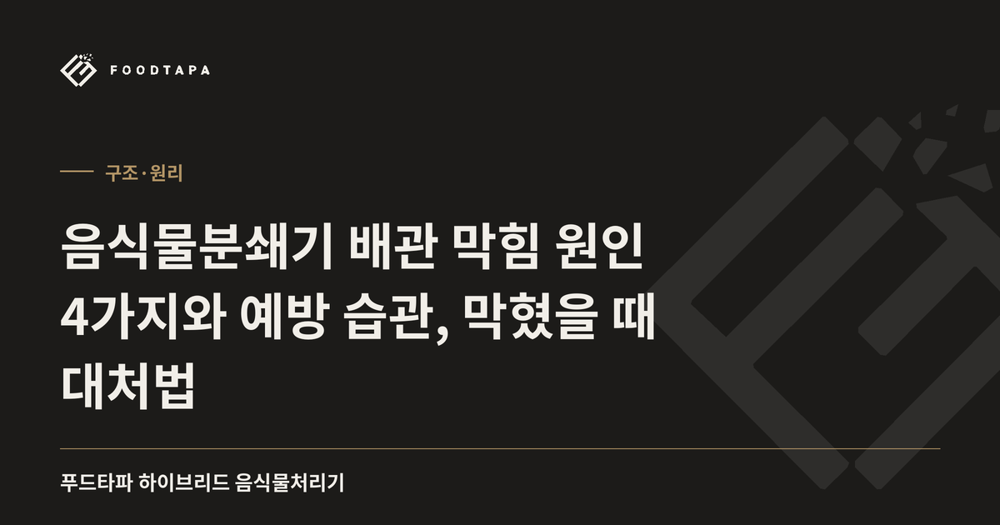

음식물분쇄기 배관 막힘 원인 4가지와 예방 습관, 막혔을 때 대처법
음식물분쇄기 배관 막힘의 원인을 기름·전분·섬유질·이물 4가지로 정리했어요. 막힘을 줄이는 습관과 막혔을 때 대처 순서까지 알려드려요.

- 배관 막힘은 갈린 찌꺼기가 배관에 남아 기름·전분과 함께 굳거나 엉기면서 생겨요.
- 기름 대량 투입, 한꺼번에 많이 넣기, 질긴 섬유와 단단한 이물이 막힘의 4대 원인이에요.
- 찌꺼기를 액체로 분해해 내보내는 상향배출 방식은 배관에 남는 고형물을 줄이는 구조예요.
음식물분쇄기 배관 막힘은 대부분 기름·전분·섬유질 같은 찌꺼기가 배관 안쪽에 남아 굳거나 엉기면서 생겨요. 무엇을 넣는지, 한 번에 얼마나 넣는지, 기름을 어떻게 다루는지만 관리해도 위험을 크게 줄일 수 있어요. 이 글에서는 막히는 원리부터 예방 습관, 이미 막혔을 때의 순서까지 차례로 정리했어요.
음식물분쇄기 배관 막힘은 왜 생길까?
배관이 막히는 이유는 잘게 갈린 찌꺼기가 물에 완전히 쓸려 내려가지 못하고 배관 벽과 꺾인 구간에 남기 때문이에요. 싱크대 배관은 굵기가 가늘고 물이 고이는 트랩 구간이 있어서, 남은 찌꺼기가 쌓이기 쉬운 구조예요.
일반 분쇄형은 갈아낸 찌꺼기를 물과 함께 하수구로 흘려보내는 방식이라 배관 부담이 구조적으로 있어요. 그래서 하수도법과 한국물기술인증원 인증 기준(지자체 안내, 2025년 6월)은 싱크대 주방용오물분쇄기가 찌꺼기를 20% 미만만 하수도로 내보내고 80% 이상을 회수하는 인증 제품만 판매·사용할 수 있게 정해 두었어요. 회수통을 빼거나 직결하는 불법 개조 제품은 이 기준을 벗어나 배관에 찌꺼기가 그대로 흘러가기 쉽고, 사용자도 100만 원 이하 과태료 대상이 될 수 있어요. 합법 여부는 불법 여부와 인증 제품 확인법에서 단계별로 확인할 수 있어요.

배관을 막는 대표 원인 4가지는?
대표 원인은 기름, 전분류, 질긴 섬유, 단단한 이물 네 가지예요. 여기에 물 부족까지 겹치면 막힘이 더 빨리 진행돼요.
| 원인 | 막히는 방식 | 대응 방법 |
|---|---|---|
| 기름 | 차가운 배관 벽에서 식어 굳고 다른 찌꺼기를 붙잡아요 | 기름을 대량으로 붓지 않아요 |
| 전분류(밥·면·감자) | 물을 만나 끈적하게 엉겨 붙어요 | 한 번에 많이 넣지 않고 나눠서 넣어요 |
| 질긴 섬유(대파·양파 껍질 등) | 실처럼 풀려 서로 엉켜요 | 일반쓰레기로 분리해요 |
| 단단한 이물(뼈·껍데기·씨) | 배관에 걸리거나 바닥에 가라앉아 쌓여요 | 넣지 않아요 |
| 물 부족 | 찌꺼기가 쓸려 가지 못하고 남아요 | 제품이 안내한 사용 방식을 지켜요 |
넣으면 안 되는 항목의 전체 목록은 금지 투입물 총정리에 따로 정리해 두었어요.
막힘을 줄이는 사용 습관은?
막힘을 줄이는 핵심은 한 번에 적게, 기름은 따로, 일반쓰레기는 처음부터 빼는 것이에요. 아래 순서를 습관으로 만들면 도움이 돼요.
- 뼈, 조개·달걀·견과류 껍데기, 옥수수·파인애플 심지, 단단한 씨는 일반쓰레기로 버려요.
- 기름기가 많은 국물이나 식용유는 키친타월로 닦거나 따로 모아 버려요.
- 밥·면처럼 전분이 많은 음식은 한 번에 몰아 넣지 말고 나눠서 넣어요.
- 양파·마늘·대파 뿌리 같은 질긴 껍질과 티백, 한약재 찌꺼기는 빼요.
- 비닐, 이쑤시개 같은 이물질이 섞이지 않았는지 투입 전에 확인해요.
- 제품마다 정해진 1회 투입 용량과 하루 권장량을 지켜요.

이미 막혔다면 어떤 순서로 대처할까?
물이 천천히 내려가거나 역류하거나 냄새가 올라오면 먼저 사용을 멈추는 것이 첫 단계예요. 막힌 상태에서 계속 넣으면 찌꺼기가 더 단단하게 다져져요.
- 투입을 멈추고 싱크대 물 사용을 최소화해요.
- 거름망이 있는 제품이라면 거름망을 닫고 시중 배관 세척제를 제품 안내대로 사용해요.
- 끓는 물을 한꺼번에 붓는 방법은 배관 이음부에 무리를 줄 수 있어 권하지 않아요.
- 그래도 내려가지 않으면 무리하게 뚫지 말고 배관 전문 업체나 제품 상담 창구에 알려요.
막힘의 원인이 제품인지 투입물인지에 따라 책임과 조치가 달라져요. 푸드타파는 제품이 원인인 하수구 막힘이 생기면 100% 환불해 드리는 막힘 보증을 운영해요. 다만 옥수수 심지, 파인애플 심지 같은 일반쓰레기를 넣어 제품 자체가 막힌 경우는 사용자 과실로 봐요. 보증 적용 기간과 세부 조건은 상담으로 확인하는 것이 정확해요.
상향배출 구조는 막힘을 어떻게 줄일까?
상향배출은 분쇄한 음식물을 미생물이 분해한 뒤 액체만 위쪽으로 내보내서 배관에 남는 고형물을 줄이는 구조예요. 푸드타파 하이브리드 음식물처리기가 이 방식이에요.
일반 분쇄형이 갈린 찌꺼기를 물과 함께 흘려보낸다면, 하이브리드형은 분쇄 후 3단계 미생물 분해를 거치고 보리차처럼 맑은 액상 형태로 배출해요. 칼날 대신 단단한 스테인리스 부품이 빠르게 돌면서 음식물을 잘게 갈고, 칼날처럼 무뎌지지 않아요. 미생물은 경북대학교와 4년간 산학 연구로 개발한 메밀껍질 담체 미생물이고, 1년에 한 번 보충해요. 1회 분쇄는 30초, 분해는 약 8~24시간이 걸려요. 구조 원리는 상향배출 방식 설명에서 더 자세히 볼 수 있어요.
다만 어떤 방식이든 일반쓰레기를 넣으면 제품 자체가 막힐 수 있고, 1일 최대 2kg, 권장 1kg이라는 용량 기준도 지켜야 해요. 고르는 기준이 궁금하면 막힘 없는 제품 고르는 기준 6가지도 참고해 보세요.
정리
배관 막힘은 기름, 전분, 질긴 섬유, 단단한 이물이 배관에 남아 쌓이면서 생기고, 투입물과 투입량 관리만으로도 상당 부분 막을 수 있어요. 이미 막혔다면 사용을 멈추고 배관 세척제로 대응하되, 풀리지 않으면 무리하지 말고 전문가와 상담하세요. 배관에 고형물을 남기지 않는 구조인지도 제품을 고를 때 함께 확인해 보세요.
참고 자료
- 하수도법, 한국물기술인증원 인증 기준(지자체 안내, 2025년 6월): 국가법령정보센터 하수도법
- 한국물기술인증원 통합인증정보망: portal.kiwatec.or.kr